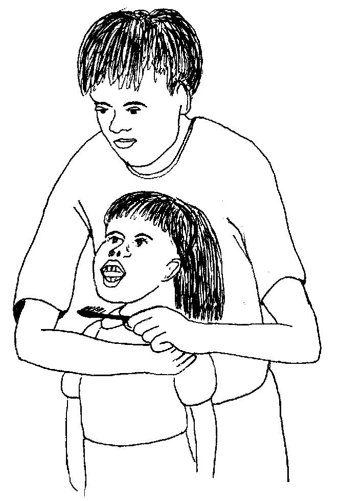
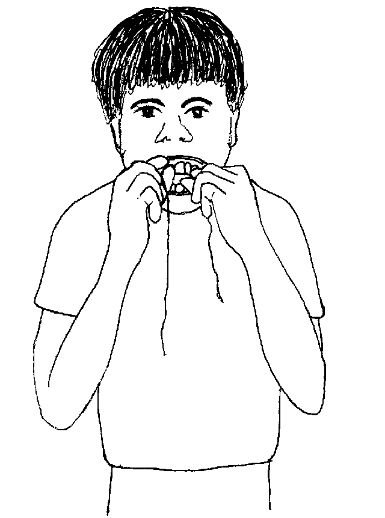
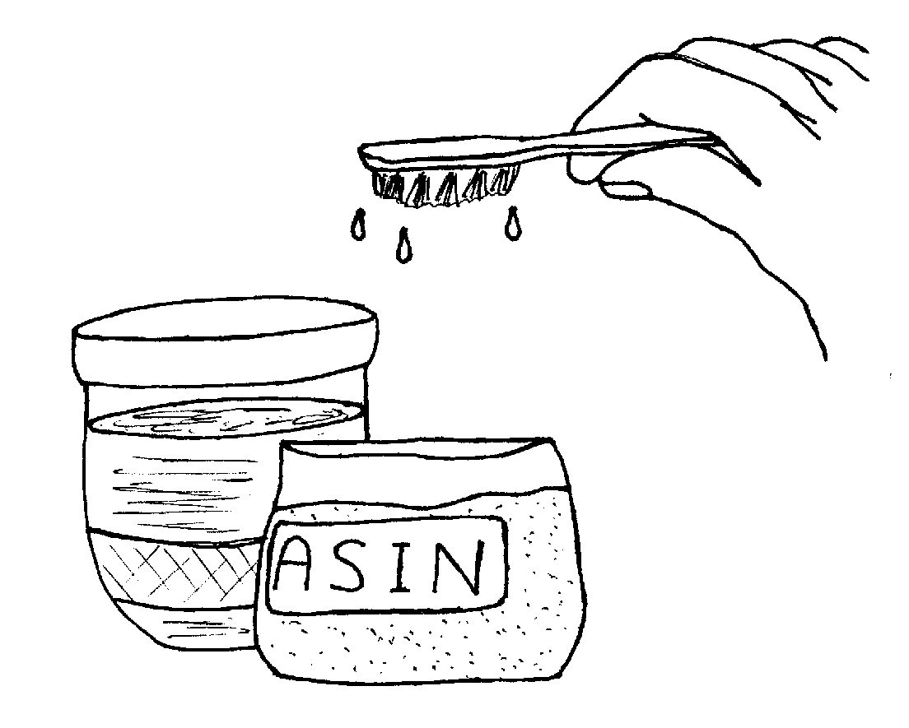
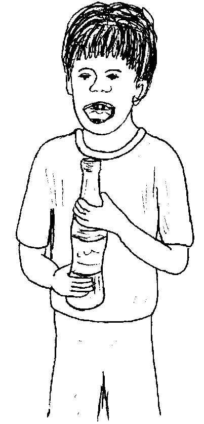
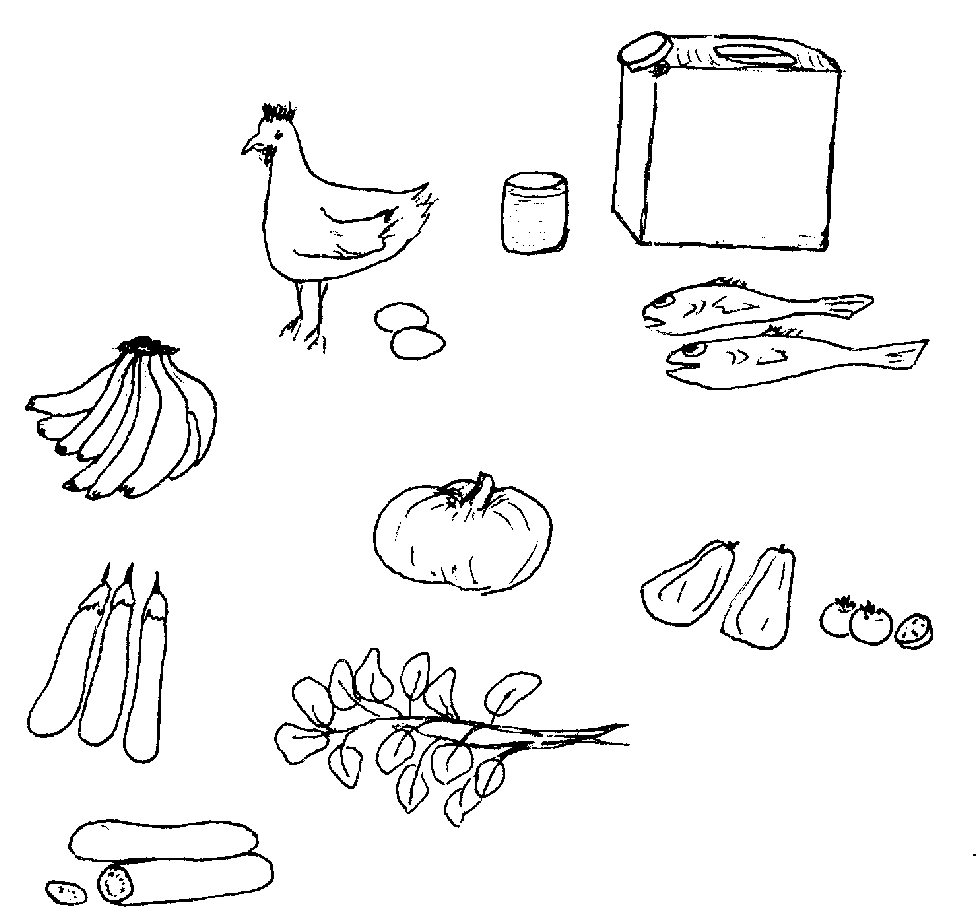
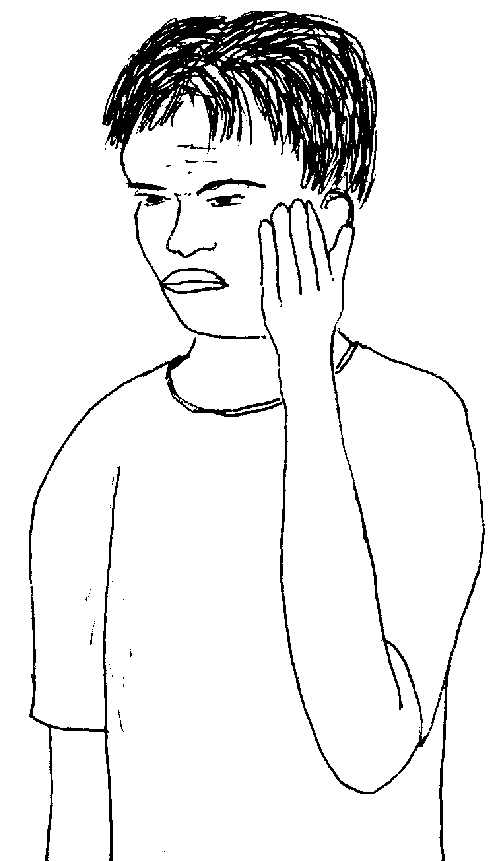
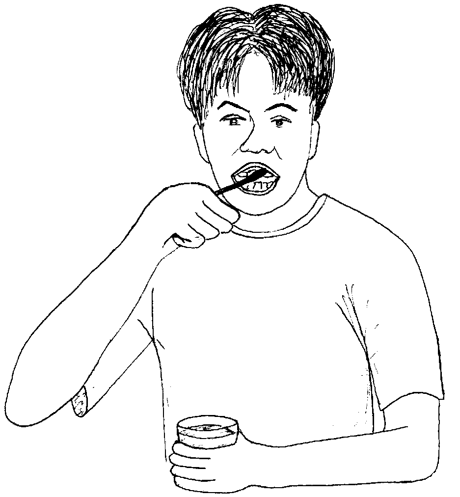
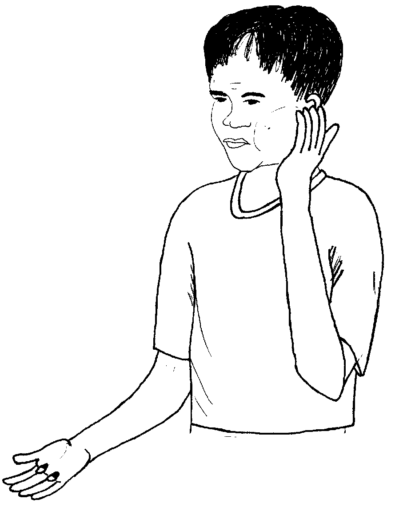

Matigsalug Manobo Healthbooks
Previous Healthbook Up to main Healthbooks page Next Healthbook
Vernacular Lexicon
A
B
BAP
BL
D
E
G
H
I
K
KI
L
LA
LIP
M
N
O
P
PA
R
S
SE
SIN
T
TE
TIN
U
V
W
Y
Z
Healthbooks
Henduen pad nanengnengi ni Lolita ne migtubuan bes e te ngipen ka anak din te peggalew rin e kandin.

Amanag keele sikandan langun se me taltalaanak ka nanlibulung ne migpitew te an-anayan ne ngipen te bate.
Te seeyen pegkamarusilem, in-umew ni Inuk si Junjun wey si Iwayan ne igpeendiyet kandin.
Ne migkahi sikandin te, “Nakita ta kuntee ka an-anayan ne ngipen te bate, maangkag pad wey amanan malinis. Piru nakakita kew te me ngipen te me etew ne migmakalawag e wey nenalungahan e wey nenabingawan e?”
Ne migpabulus sikandin ka migkahi te, “Kene perem egmaddeet ka me ngipen ta emun keg kateu ki neg atiman te ngipen ta.”
Ne mig-inse si Junjun te, “Nekey-a ka eggimuwen ta eyew ka me ngipen ta egmakehal wey egmaangkag iling te ngipen te bate wey eyew keneg kareetan?”
Ne migtabak si Inuk te, “Malemu re sika.”
Ne migkahi sikandin te, “Daruwa ka amanan ispurtanti neg gimuwen ta, ka peglinis te ngipen wey ka pegkeen te meupiya neg keenen.”
Ne migkahi si Iwayan te, “Iling ded degma, ame, ka keykewn ngipen.”
Kahin Inuk te, “Ew, uya, iling ded.”
Te pegngilit din, nakita te me bate ne due me meitem te me ngipen din wey due nabbingawan.”
Ne migkahi sikandin te, “Ware ku ay-ayari ka ngipen ku te bate e pad wey wara a regma nateu keg menuwen teg ayad-ayad, ne kuntee seinid e ka neyingumaan te ngipen ku.”
Ne migkahi si Inuk te, “Keilangan neg linisan ta ka ngipen ta te pegpanu-plas keg pekeimpus kag keen, labi e te me meemis neg keenen wey eg-inumen ne meemis.
“Deisek de ka igkabayad ta keg beli ki te tu-plas kuntere te igbayad ta te pegpeupiya te ngipen ta keg kareetan e.”

Ne mig-inse si Iwayan te, “Egmenuwen-a teg gamit ka tu-plas?”
Ne migkahi si Inuk te, “Egkaayun ne egpatakerehen wey egpatupangen teg panu-plas ka kayit tangkaan ne ngipen, wey ka riyet diralem ne me ngipen.”
Ne migpabulus si Inuk ka migkahi te, “Keilangan neg aween ka nenakatalu te ngipen neg keenen.
“Egkaayun ne iyan nu eggamiten ka bulabula wey ke due deisek ne kayu ne igpaninga.”

Ne migkahi sikandin te, “Kene ka egkalaggew ke eglangesa ka humel nu su hendue iya sika.”
Ne mig-inse si Junjun te, “Iyan bes egpakarereet te ngipen ta ka me keenen neg kasame diyet ngipen ta?”
Ne migtabak si Inuk te, “Uya, malehet ka ingkahi nu. Kag keenen ka egpaparani te kahew ne iyan eglulungag diyet ngipen ta.
“Emun keg linisan ta ka ngipen ta, ware amana kahew neg pakadereet te ngipen ta.”
Ne migkahi si Inuk te, “Iyan meupiya neg gamit ki te kulgit ke egpanu-plas ki te me ngipen ta.
“Piru ke ware kulgit, egkaayun ne iyan ta eggamiten ka asin. Egsubiren de ka tu-plas wey igdallut te asin hendue eggamiten.”

Ne mig-inse si Junjun te, “Mania teg pakarereet te ngipen ta ka egkalain-lain neg keenen?”
Ne migkahi si Inuk te, “Ka me meemis neg keenen iling te kindi wey meemis neg inumen, ka egdalapeten te kahew neg lulungag te ngipen ta.

“Meupiya pad ke mareleg ki re neg keen wey eg-inum te iling due. Ne emun egkeen ki te me meemis, keilangan neg dagdahawan ta teg linis ka me ngipen ta.”
Amanan nangapul ka me bate meyitenged due su amana ran ma egkeupian neg keen wey eg-inum te iling dutu.
Ne ingkahiyan din ka me bate te, “Keneg kaayun neg apulen sika. Keilangan neg pasalamat kew keddi su eyew keneg kareetan ka me ngipen niyu taman teg kabuyag kew e. Ne keureme, amana kew egkahale te kene kew egpakahastu te seleppi ne igbayad te me ngipen niyu neg kareetan.”
Ne migpabulus si Inuk ka migkahi te, “Due masulug neg keenen neg pakameupiya te ngipen ta wey due regma egpakarereet.
“Ka peg-alang neg keenen iling te atelug, me gulay, wey me prutas, due bitamina wey sustansiya neg pakameupiya te ngipen wey humel ta.”

Te ware naluhey, miglalahan ni Inuk ka asawa rin ne migkahi te, “Migpanulu ku ka me bate te peg-ayad-ayad te me ngipen dan.
“Kene ku igkeupii neg pekeiling kew keddi dengan te bate e pad.
“Ne kuntee, mareet e ka ngipen ku, piru keg palintutuu ran te ingkahi ku kandan, minsan egkabuyag dan e, meupiya pad ka me ngipen dan.”
“Keilangan ne kene nug behayan sikandan te seleppi ne igbeli ran te me meemis neg keenen wey eg-inumen gawas ke due kalibulungan.
“Emun keg pangeen dan te me meemis, keilangan ne pepanu-plasa nu sikandan keg pekeimpus dan kag keen.”
Kahi ni Inuk te, “Egkasasew e re keg keen sikandan te me meemis neg keenen wey ke egkalayam e sikandan ne kenad egkeupian neg keen te masustansiya neg keenen neg pakabehey te keupianan te me lawa ran.
“Ka meupiya neg keenen, egpakamaresen te ngipen, purisu keneg pakalulungag ka kahew.”
Due sabekan etew diyet bariyu ran ne migsalabet ki Inuk teg peendiye te basakan din.
Ingkahiyan te etew si Inuk te masakit kun ka sabekan beg-ang ne ngipen din.

Nabantayan din man-e ne amanag masakit keg pekeinum din wey egkeen.
Ne migkahiyan ni Inuk ka etew te, “Iyan igmasakit te ngipen nu su nalungahan e.”
Ingkahiyan ni Inuk ka etew teg pabeliyen din te tu-plas ne iglinis te ngipen din keg pekeimpus kag keen, wey egkaayun neg gamit te bulabula ne igpaninga te egmakatalu neg keenen diyet ngipen din.

Mighangyu man-e si Inuk keg kaayun ne kenad egpangeen te me meemis neg keenen wey eg-inumen.
Ingkahiyan ni Inuk ka etew te, “Keilangan ne egbalaharen nu ka iling due neg kakeen su egpakarereet te ngipen nu.”
Mig-abey man-e sikandin migkahi te, “Emun ke amane e egmasakit, tahui nu re teg dekdeken ne ahus wey ke luya naa ka lungag te ngipen nu eyew kene amanag masakit.”
Ne migkahi si Inuk te, “Emun ke keneg keulian ka ngipen nu neg masakit, wey ke layun deg libed-libed egmasakit, keilangan ne igpapitew nu te duktur te ngipen.
“Emun keg lebag wey egmasakit ka ulaula nu, keilangan neg gendiye ka te health worker nu eyew egpatengteng.

“Keilangan neg inum ka te antibayutik su ka ngipen nu migketket e te kahew.
“Ne sika ne kahew, eg-empet diyet lawa nu ne sikan naa kag pakareralu kad.”
Migkahi si Inuk te, “Emun ke keneg keulian te antibayutik ka ngipen nu te pile e ne aldew, ipabarut nud e te duktur te ngipen ke due eggendiye te inged niyu ne me duktur.”
Amana migpasalamat ka etew te me tambag ni Inuk diyet kandin. Ne warad e amana migmasakit ka me ngipen din tenged su migtuman sikandin te tambag ni Inuk.
Nekey-a ka daruwan paahi neg gimuwen ta eyew keneg kareetan ka me ngipen ta?
Egmenuwen taa teg linis ka ngipen ta?
Nekey neg keenen kag pakarereet te me ngipen ta?
Duen naa kalasi teg keenen neg pakameupiya te ngipen? Nekey naa sika?
Eglinisan ka ngipen ta wey egkeen te egpakamakeseg te ngipen neg keenen. (Lukib 63)
Keilangan neg panu-plas keg pekeimpus kag keen teg keenen, me meemis neg keenen, wey me meemis neg inumen te tagse aldew. Ne keilangan degma neg paninga tagse aldew. (Lukib 65, 67)
Ka me meemis neg keenen iling te asukal, kuk, wey kindi neg dalapeten te me kahew neg lulungag diyet ngipen. Keilangan ne kene kig keen wey eg-inum te me meemis ne iling due. (Lukib 71)
Kag keenen ne peg-alang iling te atelug, gulay, wey prutas, egpakabehey te kanekal degma te me ngipen. (Lukib 73)
This page last updated: 03-Jan-2020
Copyright © 2009-2010